Tracé approximatif — suit Hwy 1 (Calgary → Banff → Lake Louise) · Hwy 93 Promenade des Glaciers (Lake Louise → Jasper) · Hwy 16 (Jasper → Hinton) · Hwy 5 Yellowhead + Coquihalla (Valemount → Hope) · Hwy 1 + 17 (Hope → Tsawwassen) · ferry Tsawwassen ↔ Swartz Bay · Hwy 14 (Sooke → China Beach trailhead) · ferry retour + Hwy 99 vers Richmond/YVR.
Une expédition « fly-and-camp » étalée sur deux provinces, deux écosystèmes, et une nuit en backcountry verrouillée comme épine dorsale.
Le trek backcountry au centre n'est pas un effort extrême — il est camping. On peut donc charger les journées Alberta de randos modérées et grosses, puis basculer sur la côte Pacifique pour la diversité écologique : cèdres millénaires, bog à sphaigne, plages immenses, cascade qui tombe dans l'océan.
| Phase | Jours | Style | Ambiance |
|---|---|---|---|
| 1 · Alberta frontcountry | 26 → 30 juil | Camping primitif espacé · randos modérées | Lacs alpins turquoise, glaciers |
| 2 · Backcountry trek | 31 juil → 3 août | South Boundary · 4 nuits sous la tente | Solitude absolue · auto-suffisance |
| 3 · Vancouver Island | 4 → 7 août | Ferry + hike-in wild camping | Forêt pluviale, cascade océan, plages |
| 4 · Retour | 8 août | YVR → YUL vol PM | Grasse matinée, départ relax |
Décollage ~08h20-08h30 EDT · atterrissage ~11h12-11h15 MDT · Air Canada direct, ~4 h 50 de vol. Numéro exact confirmé au booking selon disponibilité (AC opère 4 vols directs/jour YUL→YYC).
Décollage 11h15 PDT · atterrissage 19h12 EDT · Air Canada direct, 4 h 10 de vol. Décalé d'un jour vs plan original (7 août) — gain : 2 nuits à Mystic Beach et grasse matinée le matin du départ.
AC304 YVR 08h50 → YUL 16h36 — arrivée MTL plus tôt mais réveil 5h le 8 août. Le AC306 reste recommandé pour le confort de fin de voyage.
4 personnes + tout l'équipement lourd (banquette arrière baissée). Cible $95-120/jour.
3 personnes + petits sacs de jour. Économie carburant. Cible $50-65/jour.
$150-250/véh — négociable en mai-juin. Appeler Avis · Enterprise · Discount · Practical avec dates précises.
Sailing 9h00 ou 11h00 · 1 h 35 de traversée · arrivée Swartz Bay (Victoria) puis route vers China Beach trailhead.
Sailing 15h00 ou 17h00 · arrivée Tsawwassen ~18h45 · drive 30 min vers Airbnb Richmond.
| 2 véhicules + chauffeurs | ~$180-220 |
| 5 passagers supplémentaires (×2 traversées) | ~$190 |
| Frais carburant variable | ~$80-90 |
| Total A/R groupe | ~$450-500 |
Réservation véhicule + passagers obligatoire — cette route a beaucoup plus de sailings que Duke Point (toutes les 1-2 h en saison) = plus de flexibilité.
Référence pour planifier les départs. Ajouter 15-25 % de tampon pour conditions estivales (parcs fréquentés, construction Hwy 1, trafic Vancouver), plus essence, repas, arrêts touristiques.
| Trajet | Conduite | Distance |
|---|---|---|
| YYC → Banff (Tunnel Mtn) | 1 h 35 | 144 km |
| Banff → Lake Louise P&R | 45 min | 64 km |
| Banff → Jasper (Promenade des Glaciers, sans arrêt) | 4 h 00 | 295 km |
| Jasper ↔ Maligne Canyon (boucle) | 35 min | 28 km |
| Jasper → Hinton | 1 h 00 | 80 km |
| Hinton → Cardinal Divide trailhead (gravel) | 1 h 40 | 80 km |
| Sortie trek → Miette HS → Valemount | 5 h 25 | 304 km |
| Valemount → Kamloops (direct, Hwy 5) | ~3 h 45 | ~325 km |
| Valemount → Helmcken Falls → Kamloops (option) | 6 h 15 | 457 km |
| Kamloops → Porteau Cove (Hwy 1 + 99) | 4 h 15 | 397 km |
| Porteau Cove → Stawamus Chief (Squamish) | 15 min | 18 km |
| Porteau Cove → Stanley Park → YVR | 1 h 10 | 58 km |
Vols early-booking + LDW carte de crédit + one-way négocié + cuisine groupe disciplinée.
Cible fragile — il faut activement chercher les conditions MIN sur les vols + voitures.
À éviter activement — FIFA WC 2026 inflation, vols last-minute, LDW comptoir.
| Poste | RÉAL TTL | PP |
|---|---|---|
| Vols AC A/R 7 pax (rabais 20 %) | $3 795 | $542 |
| Bagages enregistrés (Aéroplan) | $0 | $0 |
| Minivan one-way 14 j | $1 680 | $240 |
| Sous-compacte one-way 14 j | $910 | $130 |
| Frais one-way × 2 véh | $500 | $71 |
| Assurance LDW (achat comptoir) | $560 | $80 |
| Essence AB + BC (~3 000 km) | $468 | $66 |
| BC Ferries A/R | $579 | $83 |
| Sous-total transport | $8 493 | $1 213 |
| Poste | RÉAL TTL | PP |
|---|---|---|
| Camping PC frontcountry (4 nuits) | $144 | $21 |
| Backcountry trek (4 nuits, déjà payé) | $284 | $41 |
| Skagit Valley PP (1 nuit) | $100 | $14 |
| Mystic Beach (2 nuits self-register) | $140 | $20 |
| Airbnb Hinton (plafond $350) | $368 | $53 |
| Airbnb Valemount (plafond $320) | $358 | $51 |
| Airbnb Richmond (plafond $450) | $504 | $72 |
| Sous-total hébergement | $1 897 | $271 |
| Épicerie groupe (10 j × 7 pax) | $1 540 |
| Repas trek déshydratés maison | $196 |
| Restaurants (3 sorties) | $798 |
| Café · snacks · bières (14 j) | $882 |
| Sous-total | $3 416 ($488 PP) |
| Pass parcs Canada Strong | Gratuit |
| Navette Lake O'Hara (×7) | $175 |
| Miette Hot Springs (×7) | $74 |
| Bear spray + glace + glacières + gaz | $254 |
| Sous-total | $503 ($72 PP) |
| Catégorie | MIN | RÉAL | PESSIM |
|---|---|---|---|
| Transport | $6 291 | $8 493 | $11 400 |
| Hébergement | $1 582 | $1 897 | $2 487 |
| Activités | $240 | $249 | $294 |
| Nourriture | $2 352 | $3 416 | $4 977 |
| Équipement | $160 | $254 | $390 |
| Sous-total brut | $10 625 | $14 309 | $19 548 |
| Marge imprévus (5/7/10 %) | $531 | $1 002 | $1 955 |
| TOTAL groupe | $11 156 | $15 310 | $21 503 |
| PAR PERSONNE | $1 594 ✅ | $2 187 ⚠ | $3 072 ❌ |
Toggles OFF (impact PP RÉAL si activés) : Skytram $60 · Maligne $115 · Baleines $135 · Ice Explorer $120 · Vargas $171 · Wells Gray $13.
Sur tarif de base avant taxes. −$810 groupe.
Carte co-marquée TD/CIBC, 8 compagnons. −$560.
Chilis, currys préparés à MTL. −$400 à −$700.
Bear spray, glacières · FB Bow Valley. −$200.
Entrées parcs gratuites + 25 % rabais camping PC. −$200.
Hike-in 4 km vs water taxi $1 200. −$1 200.
1 menu commun, 1 acheteur. −~30 % épicerie.
Appeler Avis/Enterprise/Practical en mai-juin. $150-200/véh.
Hinton ≤$350 · Valemount ≤$320 · Richmond ≤$450 · LDW Visa Infinite. −$560.
Réintroduire Maligne Lake bateau ($805 groupe) OU Skytram Jasper ($420). Upgrade Airbnb Richmond final.
Skip Miette · réduire restos 3→2 · Hostel à Hinton/Valemount · café-bières $9→$5/pax/j · skip Skagit pour rec site free Coquihalla.
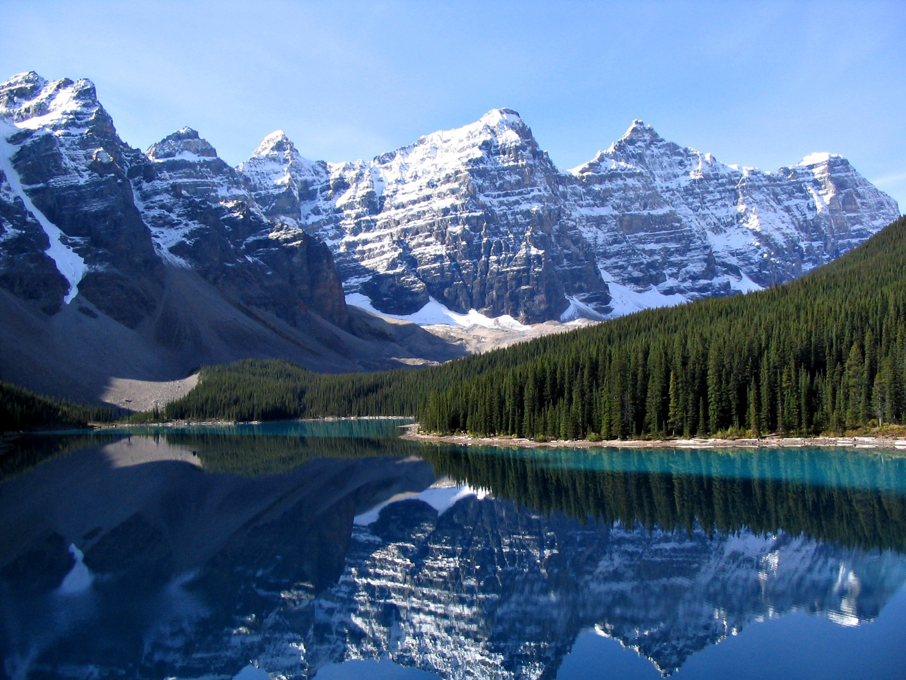
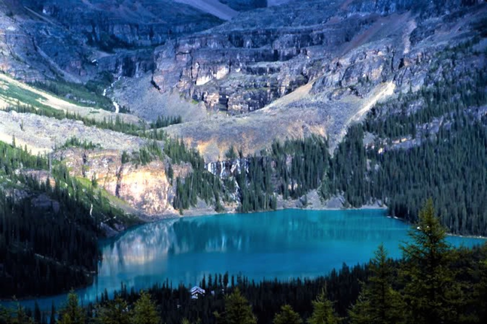
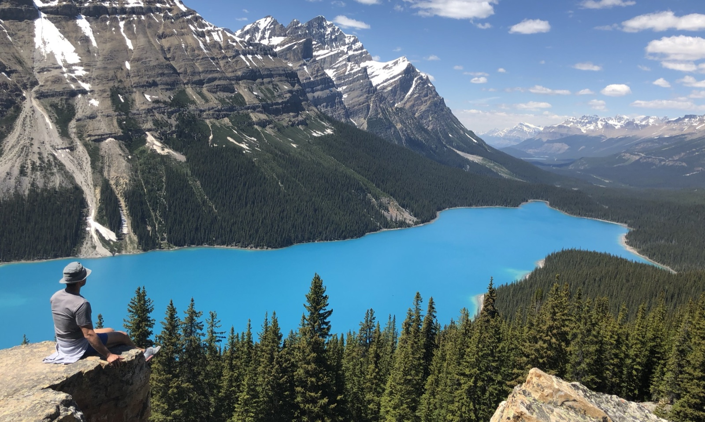
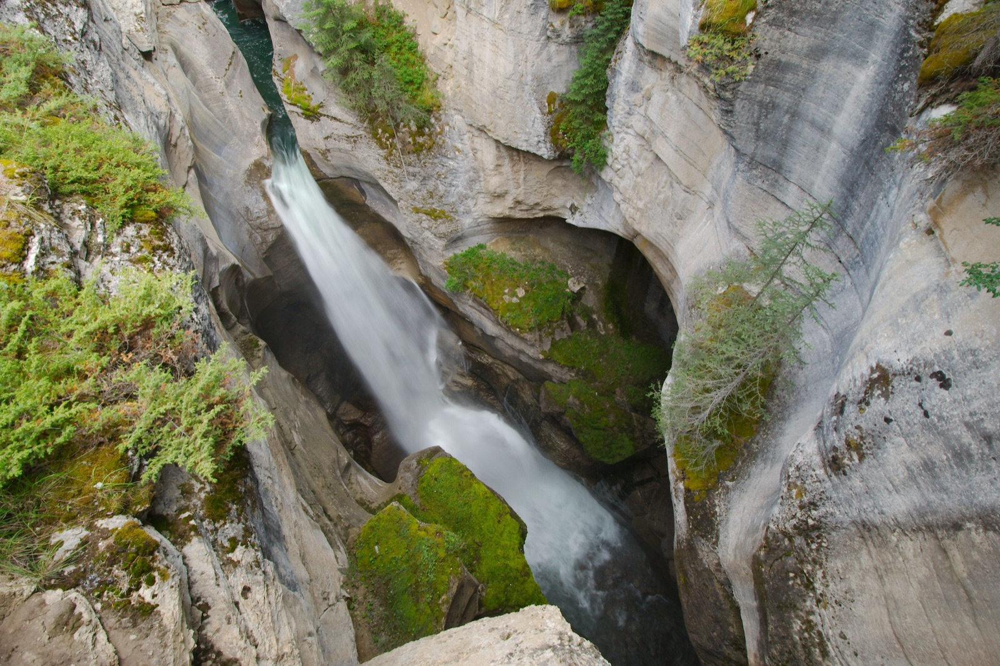
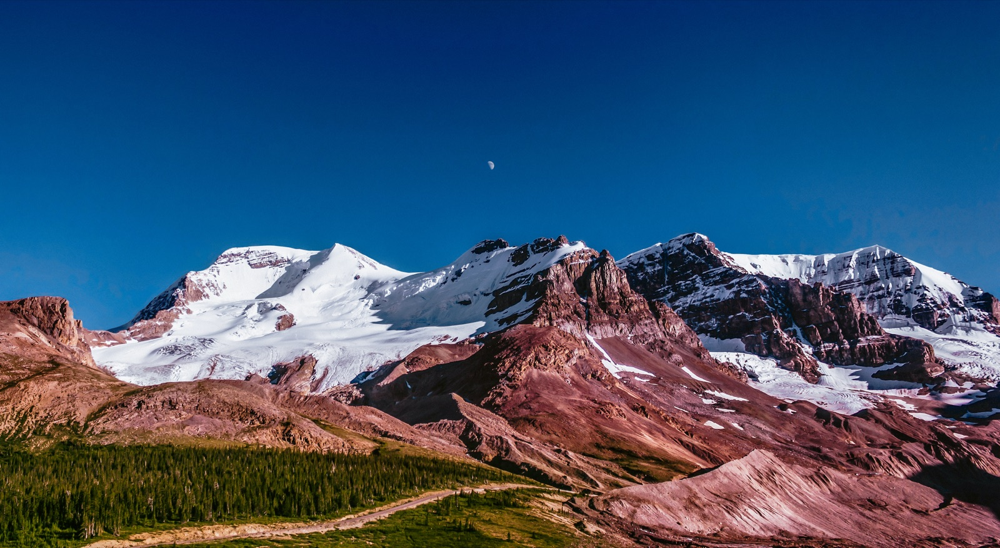
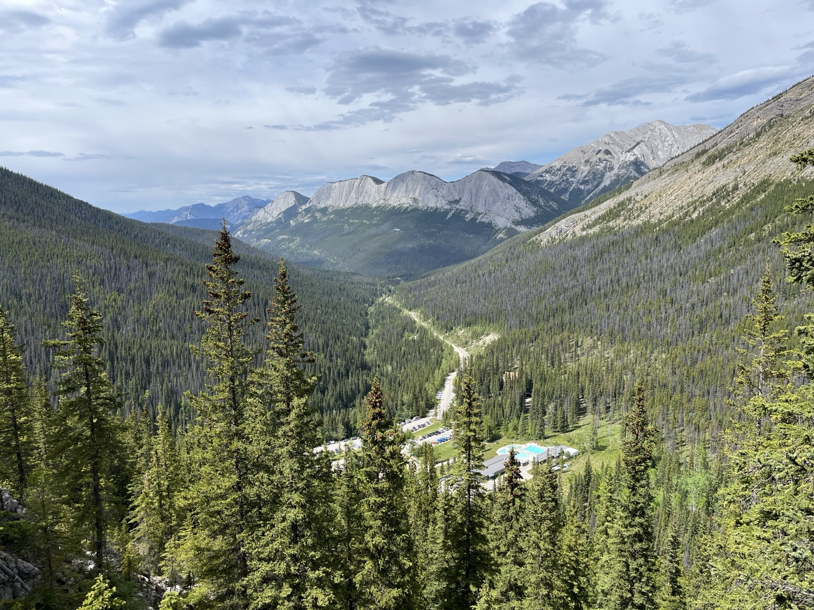
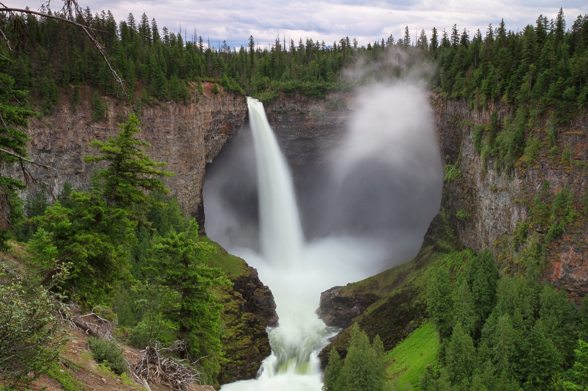
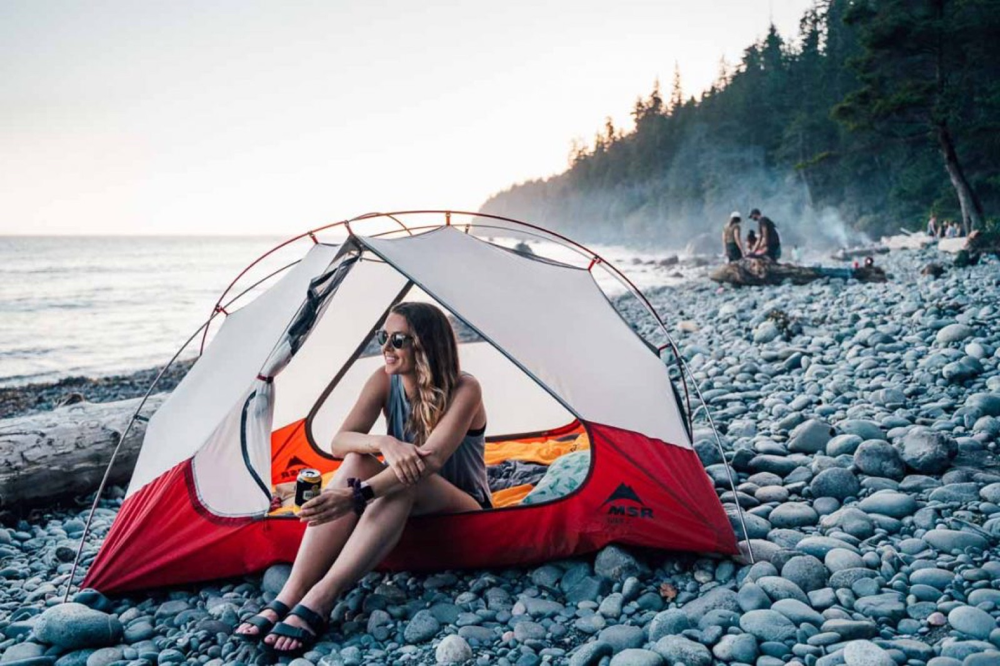
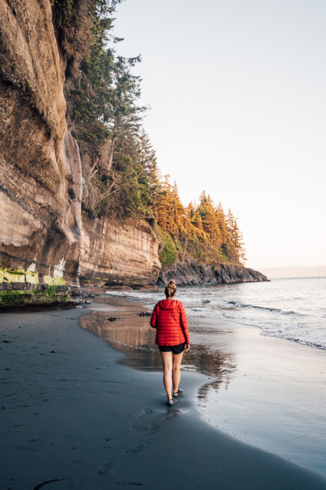
La respiration centrale du voyage. Aucun horaire, aucun transit, aucun objectif obligatoire.
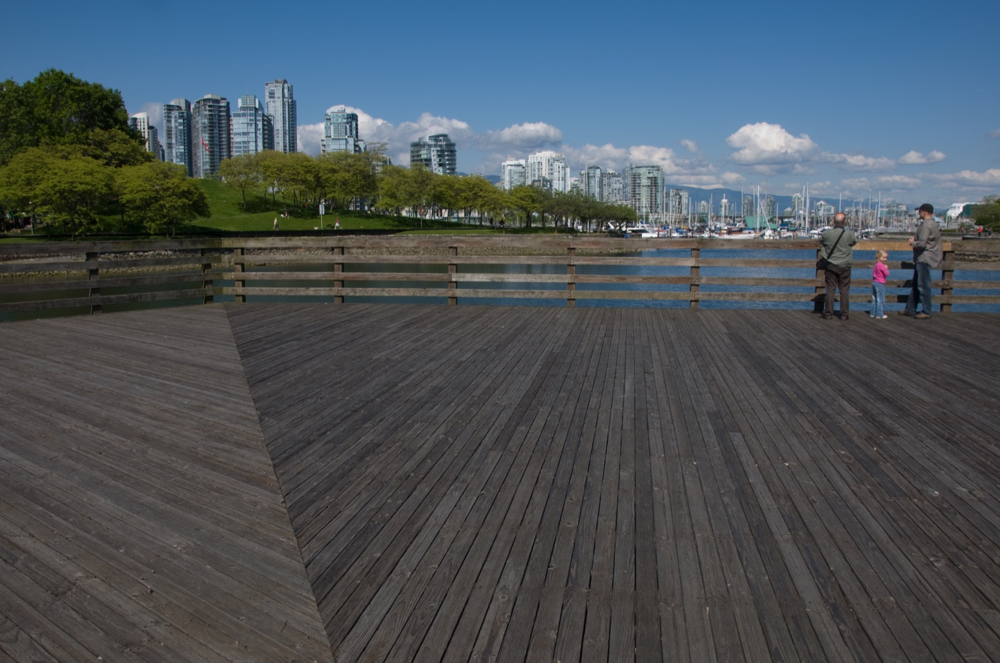
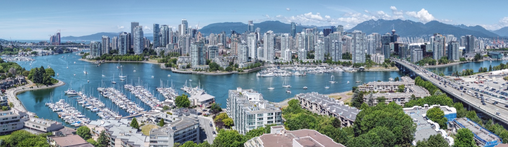
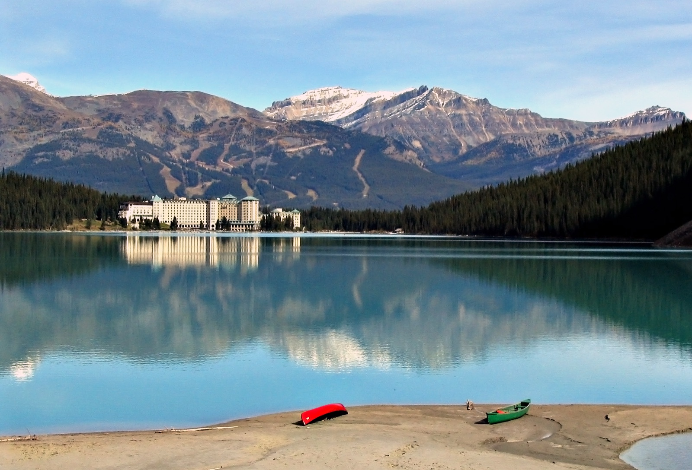
Moraine Lake — turquoise iconique, vallée des Dix Pics. Lever du soleil 5h47 le 27 juillet, navette privée requise (Moraine Lake Bus Co. ~3h30-4h).
Lake Louise — Chateau, canoës, balade Plain of Six Glaciers ou tea house. Banff Avenue + Cave & Basin (origine des parcs nationaux).
Bassin alpin de Yoho à 2 035 m, accessible uniquement par navette Parcs Canada (réservation ouverte depuis avril). Surveillance d'annulations quotidienne recommandée.
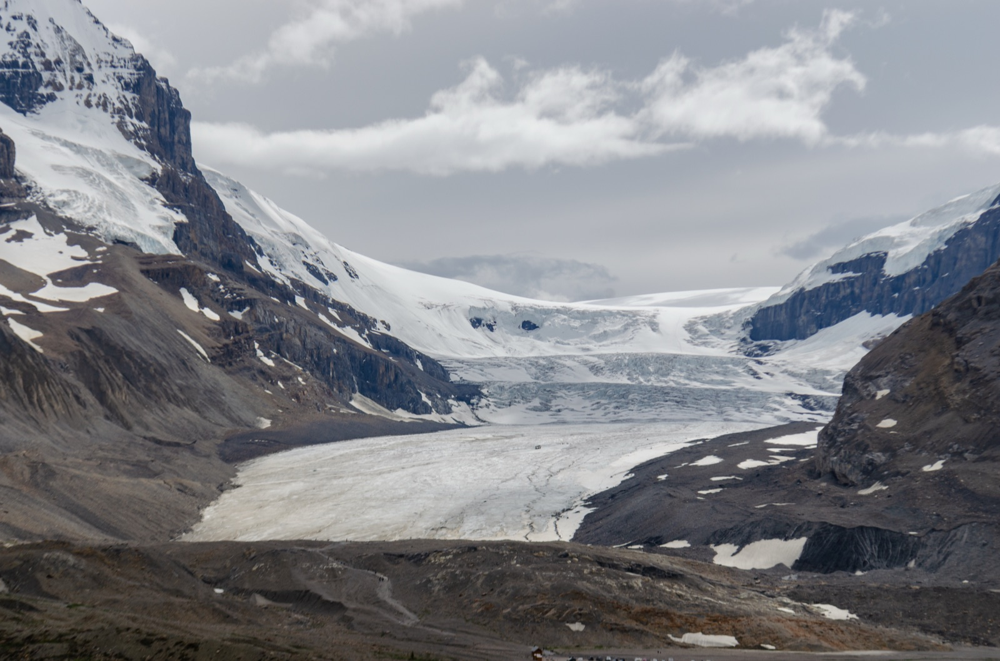
Peyto Lake — eau turquoise glaciaire en forme de tête de loup vue depuis Bow Summit. 30-45 min belvédère.
Athabasca Glacier — toe of the glacier accessible librement (30-45 min). Le glacier perd ~5 m/an et 1,5 km depuis 125 ans.
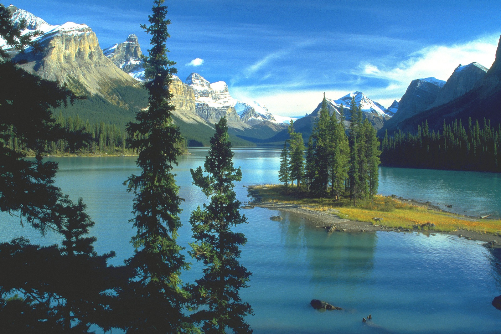
Maligne Canyon — gorge calcaire de ~50 m de profondeur, sentier 1-6 ponts (~1 h 30), accessible et spectaculaire.
Spirit Island — l'icône de Jasper, accessible uniquement par bateau Maligne Lake (~$115/pax). Site sacré Stoney First Nation, débarquement interdit.
Trailhead à 1 h 40 sur 80 km de Hinton (Bighorn Hwy + Grave Flats Rd, segment gravel). Au sud de Hinton, AB.
Réservation Parcs Canada déjà confirmée et payée ($284 groupe).
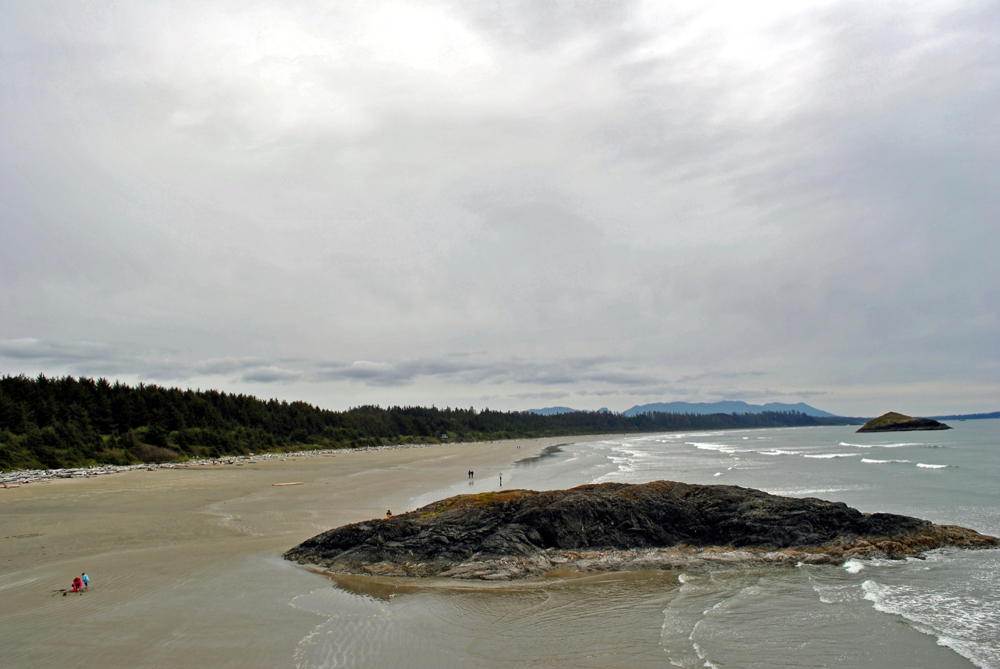
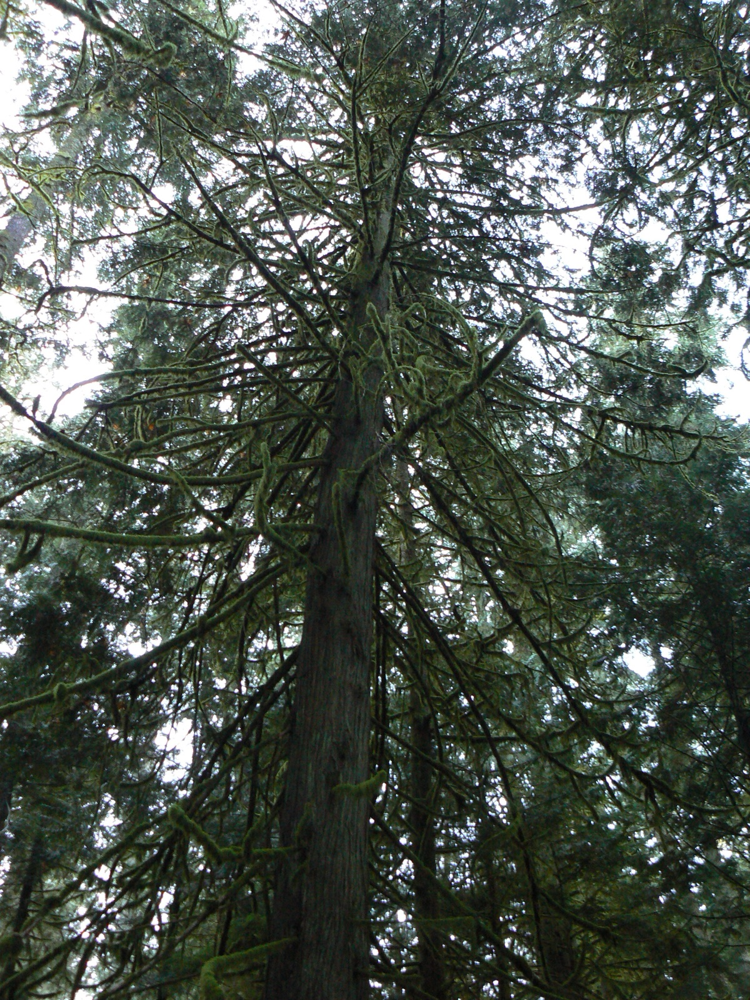
Long Beach — sable interminable, surf, ambiance « fin du monde ». Pacific Rim NP, accès gratuit avec Canada Strong Pass.
Cathedral Grove (en route, MacMillan PP) — Douglas firs de 800 ans, boucle gratuite 30 min. Smell-magic immédiat.
Hike-in 4 km depuis China Beach trailhead (Hwy 14, 30 min ouest de Sooke). Self-register $10/pax/nuit. Pas de réservation, FCFS.
vs Vargas Island (water taxi $1 200) → économie qui rentre directement dans le budget.
Stanley Park Seawall — boucle 10 km en bord d'océan, accessible sans voiture. Si on rentre par le 7 août PM (jour 13), option courte le lendemain matin.
Steveston / Solly's Bagelry — promenade tranquille bord de mer + vrais bagels de Vancouver pour le dernier matin. Granville Island take-out si temps après ferry.
| Sentier | km | D+ | Note | Diff. | Pourquoi |
|---|---|---|---|---|---|
| Cascade Lakes / Opabin Loop ⭐⭐⭐ | 6,4 | 342 m | 4.8★ | Mod | Lake O'Hara · chapelet de lacs alpins, dénivelé doux |
| Lake McArthur & Big Larches Loop ⭐⭐⭐ | 7,4 | 373 m | 4.9★ | Mod | La gem absolue de Yoho, lac alpin turquoise iconique |
| Wiwaxy Gap + Huber Ledges → Lake Oesa ⭐⭐⭐ | 7,4 | 568 m | 4.9★ | Hard | Ledges aériens si forme · version engagée |
| Wapta Falls from Fraser Creek ⭐⭐ | 5,0 | 151 m | 4.2★ | Easy | Plus grosse chute de Yoho, parfait stretch en route |
| Water Tower & Razorback Loop (Jasper) ⭐⭐ | 10,5 | 319 m | 4.5★ | Mod | Boucle Jasper #1, peu de monde, panorama Athabasca |
| Magic Ridge & Hibernia Lake Loop | 11,9 | 449 m | 4.3★ | Mod | Crête + lac, trafic léger |
| Patricia Lake Circle | 4,8 | 105 m | 4.4★ | Easy | Boucle zen fin de journée, faune (loutres, élans) |
| Banff Pedestrian Bridge / Bow Falls / Spray River Loop | 10,9 | 405 m | 4.5★ | Mod | Plan-B si pas de navette O'Hara · mixe ville + nature |
| Sentier | km | D+ | Note | Diff. | Pourquoi |
|---|---|---|---|---|---|
| 🏆 Lone Cone Trail (Meares Island) | 6,1 | 721 m | 4.7★ | Hard | Mountain-by-the-ocean · water taxi Tofino · panorama Clayoquot |
| Mount Ozzard Trail (Ucluelet) | 10,6 | 604 m | 4.4★ | Mod | Drive-up + hike, tour radar, vues océan + inlet |
| Mount Klitsa via Brooke George | 10,3 | 923 m | 4.5★ | Hard | Sommet alpin, vues Pacifique + Strathcona |
| 🏆 Long Beach + Box Island | 6,1 | 30 m | 4.8★ | Easy | Sable interminable, accès Box Island à marée basse |
| Wickaninnish Beach | 8,0 | 25 m | 4.7★ | Easy | Marche immense plage Pacific Rim, fin du monde |
| Florencia Beach | 4,0 | 56 m | 4.7★ | Easy | Plus tranquille que Long Beach, fleurs sauvages |
| Juan de Fuca Marine Trail (China → Bear) | 10+ | 300 m | 4.6★ | Mod | Inclut Mystic Beach + extension jour 12 vers Bear Beach |
| Terrace Beach Loop (Wild Pacific Trail) | 2,7 | 48 m | 4.5★ | Easy | Falaises, krummholz, phare Amphitrite (Ucluelet) |
Pas sur AllTrails mais incontournables. Forêt pluviale tempérée la plus diversifiée du Canada — sitka spruce et western red cedars de 800+ ans. Tous gratuits avec le pass Canada Strong.
2 boucles boardwalk de ~1 km chacune dans la forêt pluviale primaire. Sitkas et red cedars de 800 ans. Le Saint-Graal du smell — humidité, mousse, sève. ~30-40 min combinés.
Boucle boardwalk 800 m à travers un sphagnum bog. Plantes carnivores, lentilles d'eau, bonsaïs naturels de pin. Écosystème complètement différent de la forêt voisine.
Court (1,2 km AR) à travers vieux red cedars vers une plage cachée. Localisation Pacific Rim Highway entre Tofino et Ucluelet.
On ne veut ni voir ni entendre les voisins. Chaque nuit on cherche : sites espacés en forêt épaisse, walk-in / primitive / FCFS, ou backcountry / wilderness camping.
| Date | Type | Lieu | Plan-B |
|---|---|---|---|
| 26 → 27 juil | 🏕 Camping primitif | Castle Mountain Campground (43 sites, Hwy 1A) | Two Jack Lakeside (74 sites) |
| 27 → 28 juil | 🏕 Camping primitif | Mosquito Creek (32 sites, Promenade km 24) | Castle Mountain (×2 nuits) |
| 28 → 29 juil | 🏕 Camping primitif | Honeymoon Lake (35 sites, près Sunwapta) | Wabasso · Snaring |
| 29 → 30 juil | 🏕 Camping FCFS | Snaring Overflow (56 sites primitifs) | 2 nuits Honeymoon Lake |
| 30 → 31 juil | 🏠 Airbnb | Hinton (lit, douche, lessive pré-trek) | — |
| 31 juil → 3 août | 🎒 Backcountry | Medicine Tent + La Grace ✓ confirmé | Verrouillé |
| 3 → 4 août | 🏠 Airbnb | Valemount (laveuse/sécheuse post-trek) | — |
| 4 → 5 août | 🏕 Camping primitif | Skagit Valley PP — Silvertip (forêt pluviale) | Coquihalla rec site (free) |
| 5 → 6 août | 🌊 Wilderness côtier | Mystic Beach (Juan de Fuca PP) 1re nuit | Aucun (FCFS, espacé) |
| 6 → 7 août | 🌊 Wilderness côtier | Mystic Beach 2e nuit (journée libre) | — |
| 7 → 8 août | 🏠 Airbnb | Richmond (proche YVR vol AM) | — |
⚠ Tous les Parcs Canada sites se réservent sur reservation.pc.gc.ca · début mai 2026 = certains primitifs encore disponibles · booking immédiat recommandé.
Hike-in 4 km depuis China Beach trailhead (Hwy 14, juste après Jordan River, ~30 min ouest de Sooke). Sentier facile à modéré, 1 h 30 avec sacs. Stationnement gratuit ou ~$3/véh.
Self-register $10/pax/nuit dans la boîte au trailhead. Aucune réservation, FCFS — sites informels espacés sur la longue plage.
Ruisseaux côtiers · filtre obligatoire · apporter ~3 L/personne pour la marche d'arrivée. Ours noirs, cougars, loutres, baleines grises au large parfois.
Saison la plus stable mais brouillard matinal fréquent. Eau ~12-14 °C, baignade brève. Coucher de soleil sur Pacifique ~21h00.
7,4 km · 373 m+ · 4.9★ · Mod
Lac alpin turquoise iconique. La gem absolue de Yoho.
6,4 km · 342 m+ · 4.8★ · Mod
Chapelet de lacs, dénivelé doux. Solitude réelle.
7,1 km · 344 m+ · 4.8★ · Mod
Boucle douce du bassin Opabin, idéale groupe mixte.
7,4 km · 568 m+ · 4.9★ · Hard
Ledges aériens, montée intense puis traversée vertigineuse — si forme.
⚠ Tout dépend de la disponibilité navette Parcs Canada (quota strict). Si pas de place → option Banff townsite ou Linda Lake (hors quota mais zone O'Hara).
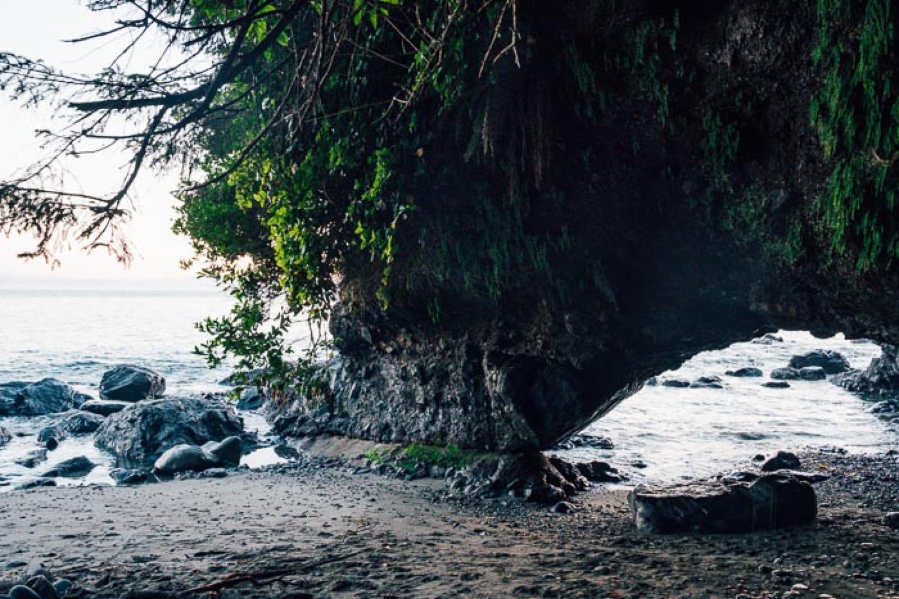
Acheter à Calgary (interdit avion). 2-3 cans pour le groupe. Usagé FB Bow Valley $40 vs neuf MEC $50.
À portée de main même sur la plage.
Bear cache obligatoire au backcountry (food bag accroché à un arbre, ≥4 m de haut, ≥2 m du tronc). À Mystic : sac suspendu identique.
≥100 m des tentes. Triangle cuisine / nourriture / dormir. Aucune nourriture, dentifrice, déo, lotion dans la tente.
Marcher en groupe ≥4, parler/chanter en zone dense, ne jamais courir si rencontre. Cougars : maintenir contact visuel, paraître grand.
Interdits dans tous les Parcs nationaux Canada + Provinciaux BC/AB. Photo argentique/numérique seulement.
911 + Parcs Canada Dispatch 1-877-852-3100. SPOT/inReach recommandé pour le trek (zone hors couverture).